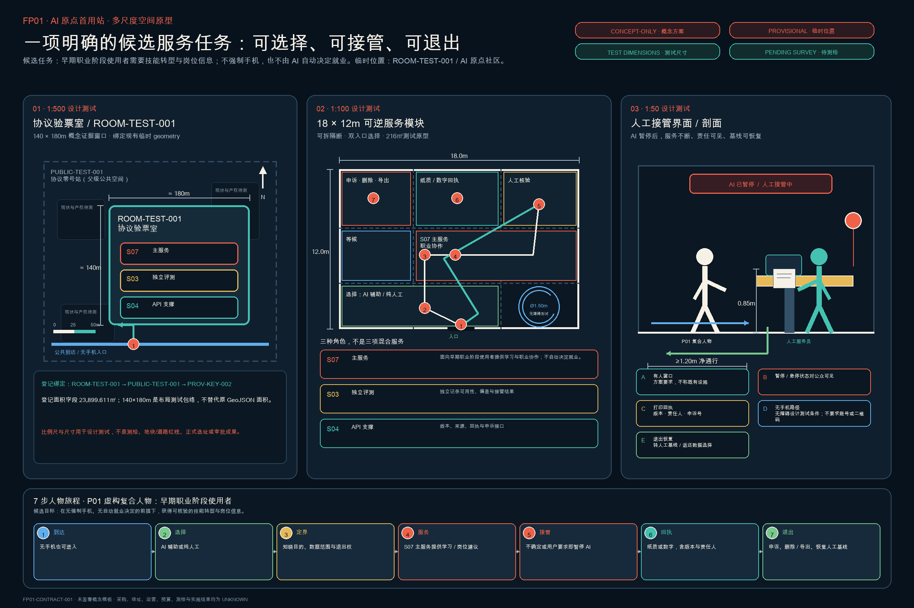
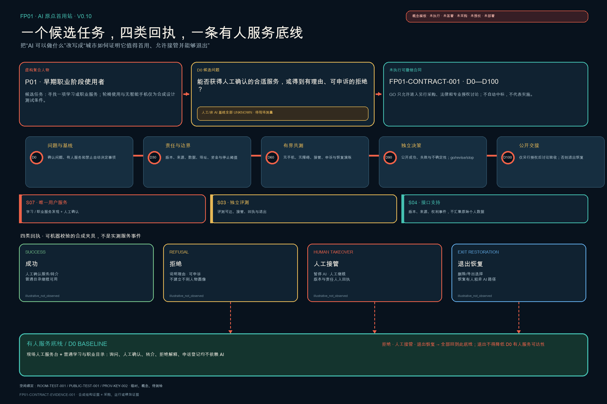

P01 · 早期职业阶段使用者；轮椅与无智能手机仅为设计测试条件，不对应真实居民。
一个人、一件事、一份可撤销合同
从海淀源头创新到城市首用，不以宏大系统代替具体问题。FP01 的 D0 人工/非数字基线仍为 unknown；只有证据到齐才允许进入下一道门。

一个人、一件事、一份可撤销合同
FP01 只提出一个待 D0 现场确认的候选服务问题；它不是已获授权的服务、采购或试点。
在有人窗口找到一项由人工确认的学习或职业服务，或获得有理由、可申诉的拒绝；保留无手机和非 AI 路径。D0 人工/非数字基线仍为 unknown。
S07 是唯一面向使用者的服务；S03 只做独立评测；S04 只提供接口/API 支持。
四类合成回执成功拒绝人工接管退出与恢复

支撑这份合同的三种城市能力
先确认真实服务问题、人工/非数字路径、禁止自动决定事项和可接受阈值；当前 D0 观测值为 unknown。
S07 对使用者负责；S03 独立评测；S04 只供接口。拒绝、故障或异议都必须回到有人服务。
成功、拒绝、人工接管、退出恢复四类合成回执只是模板；真实运行证据形成后才讨论复制。
核心指标
已知值只描述提交结构与临时设计模型；实际采购、扩散、标准输出和独立核验公共收益保持 unknown。
FP01 · 一项候选服务任务的可撤销首用合同
S07 是唯一用户服务，S03 只做独立评测，S04 只做接口支持；D0 基线 unknown。四类合成回执覆盖成功、拒绝、人工接管、退出恢复。D90 通过仍只解锁另行授权讨论。
GO · 只解锁独立授权讨论
REVISE / STOP · 冻结自动功能，恢复人工基线，失败证据进入 COMMONS

合同背后的三个重点区域与人尺度支撑
以下均为概念体验，不代表现状、精确位置、建筑方案或获批工程。

众智园 · 接得上 / 验得真
公众旁观廊位于安全边界外；试验庭保留有人控制、物理急停与能耗显示。

AI 原点 · 造得出 / 用得上
无手机、无账号和轮椅使用者先抵达有人柜台；评测、停止与申诉职责分离。
大钟寺 · 用得上 / 推得开
小店与创作者留在前台，人工服务、争议复核和贡献档案形成日常公共界面。
六项系统能力下移为合同的空间与运营支撑
ORIGINATE—INTEGRATE—PROVE—DEPLOY—SCALE—RETAIN 不是首屏口号，而是支持一项候选任务完成、被接管、退出和留下证据的后台能力。
任务覆盖与自检状态
来源 → 假设 → GeoJSON / 指标 → 双语图件 / 图纸 → 矩阵 → 四门自检。官方边界到达后触发整包重算。
总览地图三层范围重点区域用地分区交通慢行蓝绿公共空间建筑更新项目AI 场景核心指标任务覆盖自检状态来源假设
七组双语分析图
由本包 GeoJSON、metrics.json 与证据矩阵本地生成；不调用网络底图。